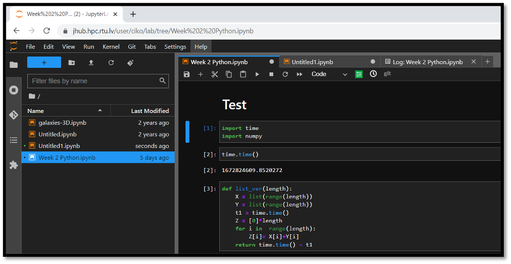
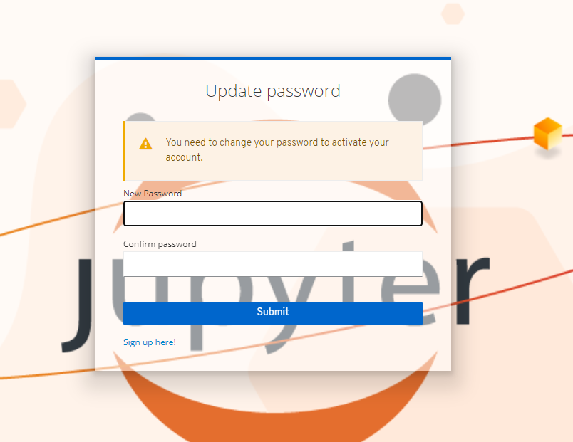
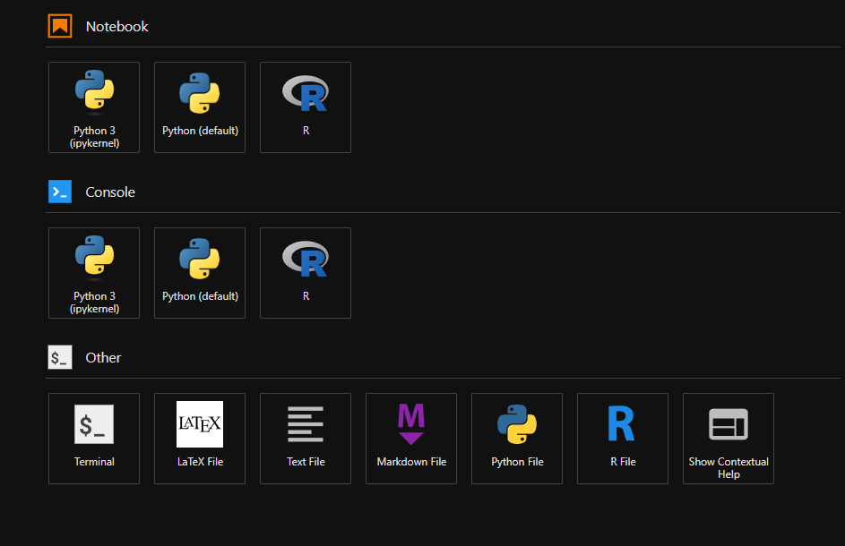
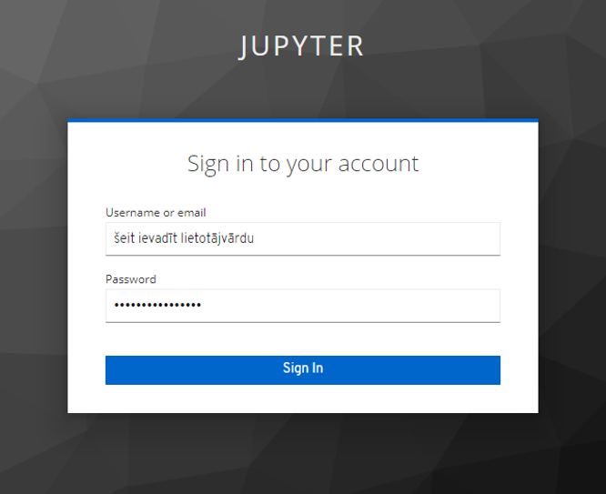
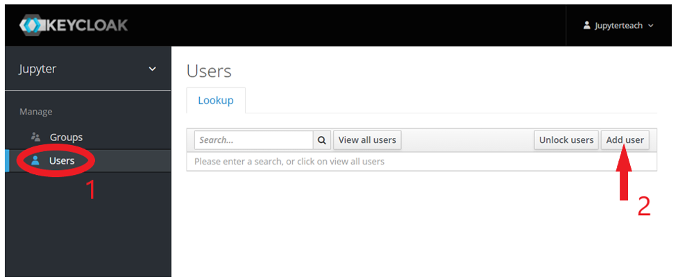
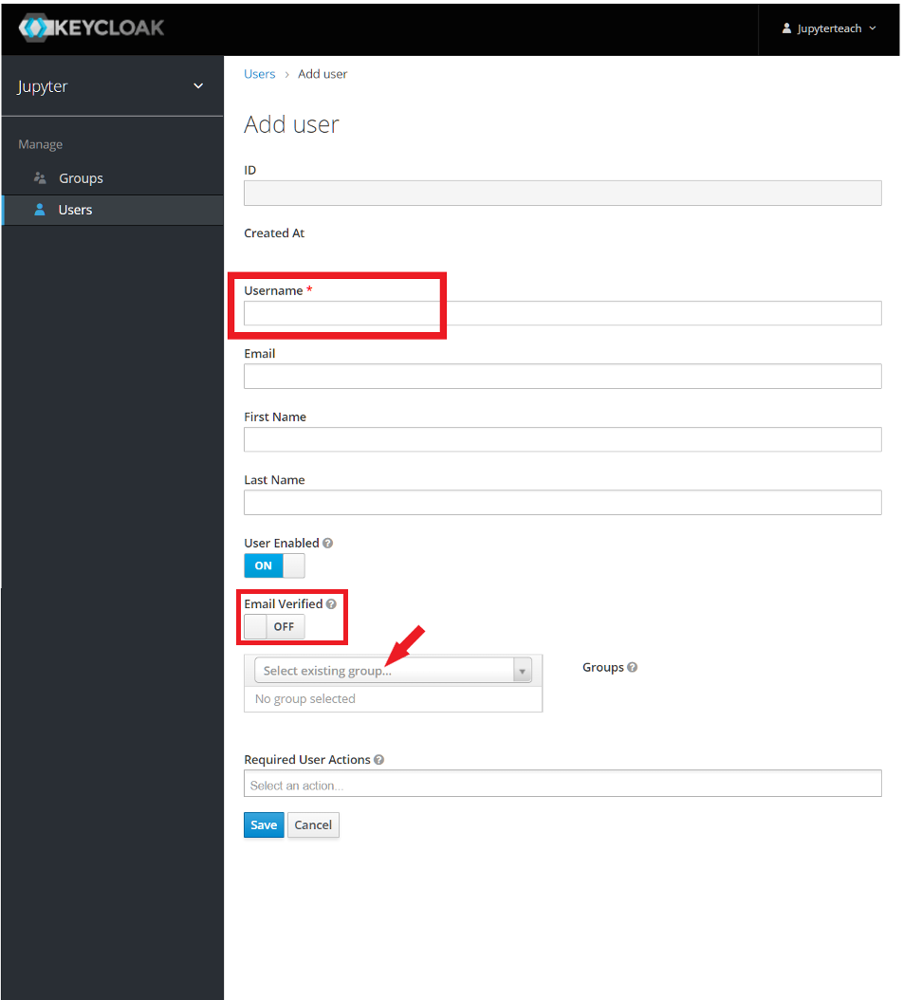
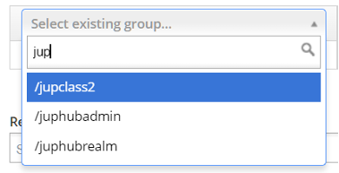
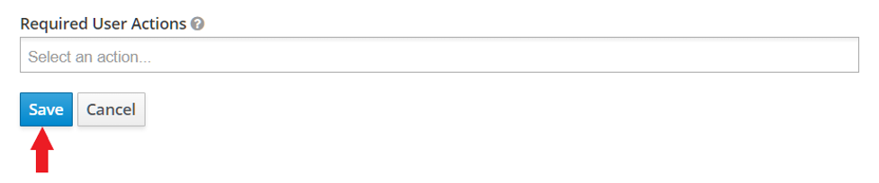
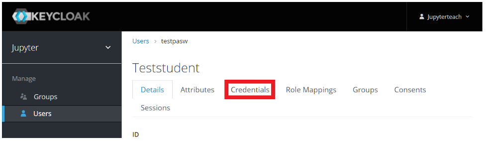
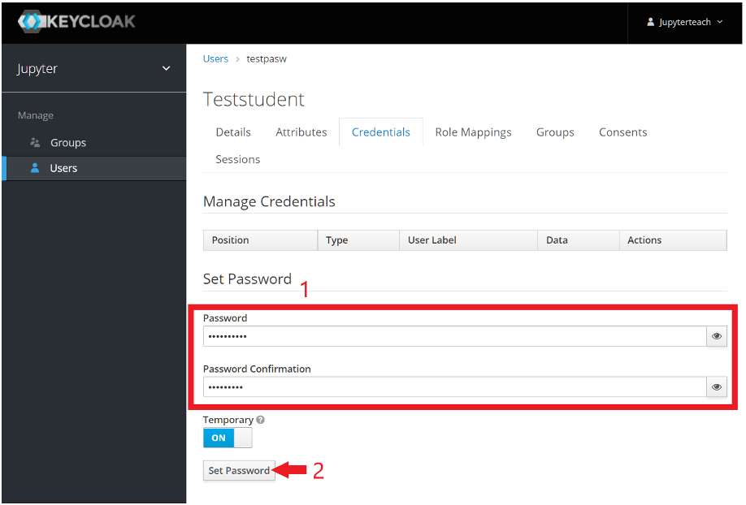

Jupyter Hub
JupyterHub is an open-source graphical programming environment accessible through a web interface. Currently, programming in Python and R languages is supported on the RTU Jupyter environment. The prepared tasks can be run on a single 32 vCPU and 64GB RAM virtual machine, but in the future, it is planned to create the possibility of running tasks on GPUs and the whole cluster. More information https://hpc.rtu.lv/jupyterhub/.

Access
RTU HPC Jupyter Hub portal: https://jhub.hpc.rtu.lv/
Access to the Jupyther Hub should be requested through the RTU HPC center registration form.
Only the university employees (researchers, instructors, administration) may request access.
Students are invited by their course instructors (see the procedure in the next section).
Login to Jupyter Hub
To login in jupyter first go to https://jhub.hpc.rtu.lv/
Then enter your username and password
If this window appears, enter a new password for your user. 
Select kernel
In jupyterhub you can use both python and R languages. To use the desired one you need to select the proper kernel when opening a new notebook file. In the image below you can see the choices of either the Python or R kernels. 
Install R libraries locally
Create a Local Directory for Your R Packages:
dir.create("R_packages")
Set the Library Path:
.libPaths(c(.libPaths(), "R_packages"))
Install the Package:
install.packages("your_package_name", lib = "R_packages")
Replace “your_package_name” with the name of the package you want to install.
Load the Package:
library(your_package_name, lib.loc = "R_packages")
Replace your_package_name with the actual name of the package.
If package installation fails, use this command to see what causes the error
install.packages("your_package_name", lib = "R_packages", verbose = TRUE, keep_output = TRUE)
Register a group of students
You must have an instructor account to register and invite group of students.
Follow the address: https://jhub-auth.hpc.rtu.lv/auth/admin/jupyter/console.
Enter your username and password. 
On the left side click on the button “Users” and then on the right side on “Add user”. 
Enther the student’s username in the field “Username” [it is advisable to not use an email address as a student’s username, thiss may cause errors], verify that the email verified box is set to ON and in the box “Select existing group” enter the name of the desired classroom to which you wish to add the student.  
Lastly, click on “Save” and scroll to the top of the page. 
Click on “Credentials”. 
Enther the password that the student will use to log in in the fields “Password” and “Password Confirmation” [advisable to use the same password for all students]and click on “Set password” 
That is it! A new student has been registered to your classroom. The student does not receive his login details automatically, you need to give the student his username and password manually.
Login to jupyter: https://jhub.hpc.rtu.lv
Impersonate users to view their files
If you need to view a student’s files you can follow the steps below.
Step 1: Log in to the Keycloak Admin Console
Open your web browser and navigate to the Keycloak Admin Console. This is typically accessible via
[http://<keycloak-server>/auth/admin/](https://jhub-auth.hpc.rtu.lv/auth/admin/jupyter/console).Log in using your credentials.
Step 3: Search for the User
In the Users section, you can search for the user you want to impersonate by using their username, email, or other attributes.
Enter the search criteria in the search box and click on Search or click All users.
Step 4: Impersonate the User
Once you find the user, you will see a button labeled Impersonate at the right side of the user’s row.
Click on the Impersonate button.
Note: If you do not see the Impersonate button, you may not have the necessary permissions. You will need to contact hpc@rtu.lv to ensure you have the impersonation role or sufficient privileges.
After clicking Impersonate, a new tab or window will open, and you will be logged in as the selected user.
Step 5: Perform the Necessary Actions
In the impersonated session, you can open a new tab and navigate to jhub.hpc.rtu.lv as the user, access all files, and perform any actions as neede.
Step 6: End the Impersonation Session
Once you have finished performing the necessary tasks, you can end the impersonation session.
To do this, simply log out of the user session in the keycloak tab.
Step 7: Return to the Admin Console
Enter
[http://<keycloak-server>/auth/admin/](https://jhub-auth.hpc.rtu.lv/auth/admin/jupyter/console)to get to your Keycloak Admin Console and enter your login information again.Once logged in you can continue from Step 2.